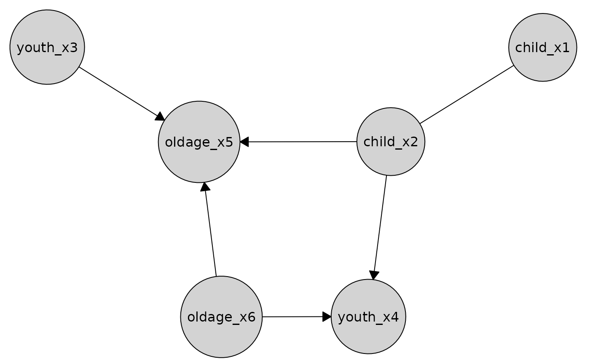
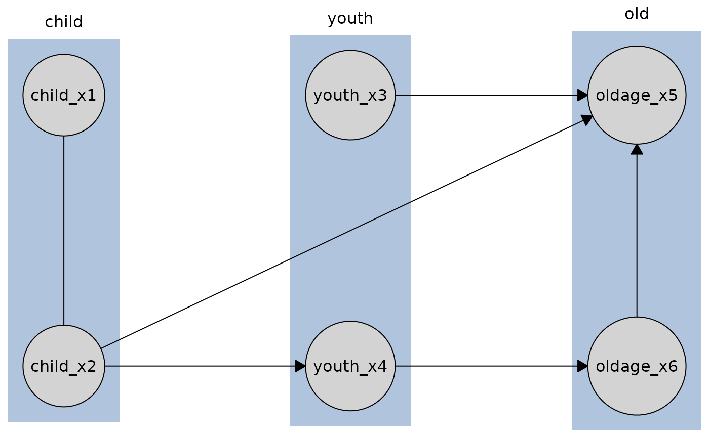

Apply a causal discovery method to a data frame to infer causal relationships on observational data. Supports multiple algorithms and optionally incorporates prior knowledge.
Arguments
- data
A data frame.
- method
A
disco_methodobject representing a causal discovery algorithm. Available methods areboss()- BOSS algorithm,boss_fci()- BOSS-FCI algorithm,fci()- FCI algorithm,gfci()- GFCI algorithm,ges()- GES algorithm,grasp()- GRaSP algorithm,grasp_fci()- GRaSP-FCI algorithm,gs()- GS algorithm,iamb(),iamb_fdr(),fast_iamb(),inter_iamb()- IAMB algorithms,pc()- PC algorithm,sp_fci()- SP-FCI algorithm,tfci()- TFCI algorithm,tges()- TGES algorithm,tpc()- TPC algorithm.
- knowledge
A
knowledgeobject to be incorporated into the disco method. IfNULL(default), the method is applied without additional knowledge.
Details
For specific details on the supported algorithms, scores, tests, and parameters for each engine, see:
BnlearnSearch for bnlearn,
CausalDiscoSearch for causalDisco,
PcalgSearch for pcalg,
TetradSearch for Tetrad.
Examples
data(tpc_example)
# use pc with engine bnlearn and test fisher_z
my_pc <- pc(engine = "bnlearn", test = "fisher_z", alpha = 0.01)
pc_bnlearn <- disco(data = tpc_example, method = my_pc)
plot(pc_bnlearn)

# define tiered background knowledge
kn <- knowledge(
tpc_example,
tier(
child ~ starts_with("child"),
youth ~ starts_with("youth"),
old ~ starts_with("old")
)
)
# use gs with engine bnlearn and test cor and tiered background knowledge
my_pc_tiered <- pc(engine = "bnlearn", test = "cor", alpha = 0.01)
pc_tiered_bnlearn <- disco(
data = tpc_example,
method = my_pc_tiered,
knowledge = kn
)
plot(pc_tiered_bnlearn)
